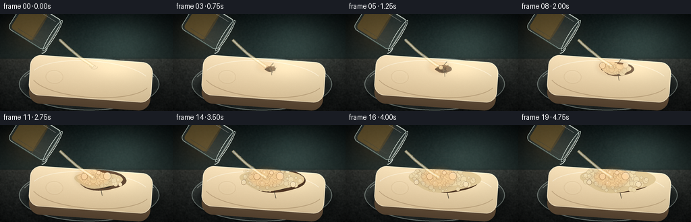
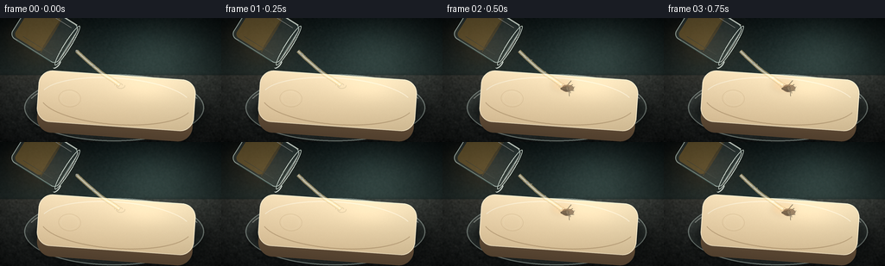
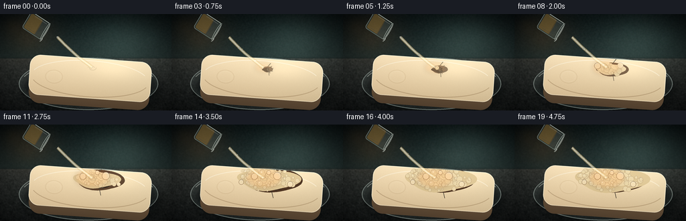
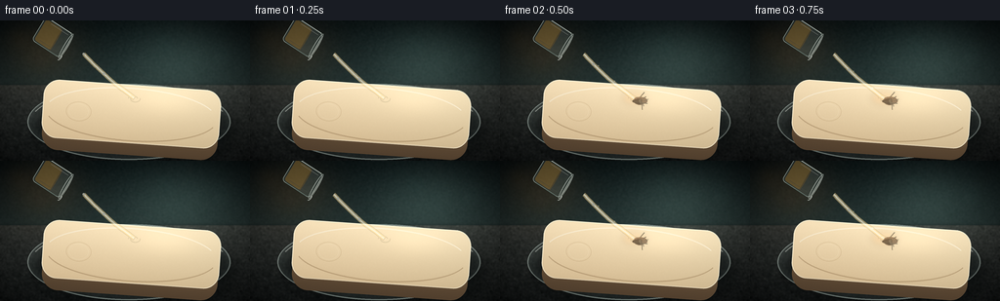
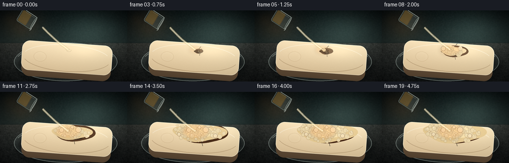

CODING AGENTS AS PIXEL WORLD MODELS
traex/DeepSeek-V4.1-Flash · material_0042
点击播放 · 原生 RGB 像素
此结果可播放，但该运行尚未通过最终提交审核。页面展示不代表评测通过。
逐轮保存的候选
回放视频、检查图与代码变化。
每份候选均可单独播放。实际图片检查记录在下方工具轨迹中。
候选 01播放与检查图
点击播放 · 原生 RGB 像素


展开代码变化
--- 上一保存版本
+++ 本次保存版本
@@ -0,0 +1,667 @@
+from pathlib import Path
+import math
+
+import numpy as np
+from PIL import Image, ImageDraw, ImageFilter
+
+import artifact_io
+
+
+WIDTH = 256
+HEIGHT = 144
+FRAMES = 20
+FPS = 4.0
+SCALE = 4
+W = WIDTH * SCALE
+H = HEIGHT * SCALE
+
+
+def S(value):
+ return int(round(value * SCALE))
+
+
+def clamp(value, low=0.0, high=1.0):
+ return max(low, min(high, value))
+
+
+def smoothstep(edge0, edge1, value):
+ if edge0 == edge1:
+ return float(value >= edge1)
+ x = clamp((value - edge0) / (edge1 - edge0))
+ return x * x * (3.0 - 2.0 * x)
+
+
+def rotate_point(x, y, angle_degrees):
+ angle = math.radians(angle_degrees)
+ ca, sa = math.cos(angle), math.sin(angle)
+ return x * ca - y * sa, x * sa + y * ca
+
+
+def radial_ellipse_mask(size, center, radii, softness=1.0):
+ w, h = size
+ yy, xx = np.mgrid[0:h, 0:w].astype(np.float32)
+ nx = (xx - center[0]) / max(radii[0], 1.0)
+ ny = (yy - center[1]) / max(radii[1], 1.0)
+ distance = np.sqrt(nx * nx + ny * ny)
+ alpha = np.clip((softness + 1.0 - distance) / max(softness, 1e-5), 0.0, 1.0)
+ return alpha
+
+
+def make_background():
+ rng = np.random.default_rng(1207)
+ yy, xx = np.mgrid[0:H, 0:W].astype(np.float32)
+ xn = xx / W
+ yn = yy / H
+
+ top = np.array([14, 24, 25], dtype=np.float32)
+ middle = np.array([38, 52, 51], dtype=np.float32)
+ table_near = np.array([27, 31, 31], dtype=np.float32)
+ table_far = np.array([57, 61, 58], dtype=np.float32)
+
+ upper_mix = np.clip(yn / 0.49, 0.0, 1.0)[..., None]
+ rgb = top * (1.0 - upper_mix) + middle * upper_mix
+
+ table = yn > 0.46
+ table_mix = np.clip((yn - 0.46) / 0.54, 0.0, 1.0)[..., None]
+ table_rgb = table_far * (1.0 - table_mix) + table_near * table_mix
+ rgb = np.where(table[..., None], table_rgb, rgb)
+
+ # A soft pool of window light and a warm practical light, both out of focus.
+ key = np.exp(-(((xn - 0.73) / 0.31) ** 2 + ((yn - 0.26) / 0.37) ** 2) * 2.0)
+ warm = np.exp(-(((xn - 0.17) / 0.22) ** 2 + ((yn - 0.20) / 0.32) ** 2) * 2.3)
+ rgb += key[..., None] * np.array([24, 31, 29], dtype=np.float32)
+ rgb += warm[..., None] * np.array([30, 17, 7], dtype=np.float32)
+
+ # Fine, anisotropic bench texture.
+ grain = rng.normal(0.0, 1.0, (H, W)).astype(np.float32)
+ grain = np.asarray(
+ Image.fromarray(((grain * 0.5 + 0.5) * 255).clip(0, 255).astype(np.uint8)).filter(
+ ImageFilter.GaussianBlur(SCALE * 0.7)
+ ),
+ dtype=np.float32,
+ )
+ grain = (grain - grain.mean()) / (grain.std() + 1e-5)
+ table_grain = grain * 4.0
+ rgb += np.where(table[..., None], table_grain[..., None], table_grain[..., None] * 0.35)
+
+ # Sparse stone flecks give the bench a readable material without becoming busy.
+ flecks = rng.random((H // (SCALE * 2), W // (SCALE * 2))) > 0.985
+ flecks = np.kron(flecks, np.ones((SCALE * 2, SCALE * 2), dtype=bool))
+ flecks = flecks[:H, :W] & table
+ rgb += flecks[..., None] * np.array([8, 8, 7], dtype=np.float32)
+
+ image = Image.fromarray(np.clip(rgb, 0, 255).astype(np.uint8), "RGB")
+
+ bokeh = Image.new("RGBA", (W, H), (0, 0, 0, 0))
+ bd = ImageDraw.Draw(bokeh)
+ bokeh_specs = [
+ (0.07, 0.12, 0.050, (185, 126, 55, 28)),
+ (0.16, 0.29, 0.032, (210, 160, 82, 23)),
+ (0.25, 0.12, 0.022, (86, 154, 146, 20)),
+ (0.36, 0.26, 0.037, (91, 151, 145, 16)),
+ (0.48, 0.10, 0.021, (201, 156, 92, 14)),
+ (0.66, 0.17, 0.048, (84, 143, 137, 17)),
+ (0.76, 0.07, 0.026, (209, 163, 95, 18)),
+ (0.88, 0.24, 0.055, (89, 142, 138, 15)),
+ (0.95, 0.10, 0.029, (190, 139, 73, 14)),
+ ]
+ for x, y, r, color in bokeh_specs:
+ cx, cy, rr = S(x * WIDTH), S(y * HEIGHT), S(r * WIDTH)
+ bd.ellipse((cx - rr, cy - rr, cx + rr, cy + rr), fill=color)
+ bokeh = bokeh.filter(ImageFilter.GaussianBlur(SCALE * 8))
+ image = Image.alpha_composite(image.convert("RGBA"), bokeh).convert("RGB")
+
+ # Horizon seam, then a restrained vignette.
+ seam = Image.new("RGBA", (W, H), (0, 0, 0, 0))
+ sd = ImageDraw.Draw(seam)
+ horizon = S(0.462 * HEIGHT)
+ sd.rectangle((0, horizon - S(0.7), W, horizon + S(0.7)), fill=(14, 18, 18, 85))
+ sd.rectangle((0, horizon + S(1.2), W, horizon + S(2.2)), fill=(188, 196, 182, 18))
+ seam = seam.filter(ImageFilter.GaussianBlur(SCALE * 1.2))
+ image = Image.alpha_composite(image.convert("RGBA"), seam).convert("RGB")
+
+ vignette = np.clip(
+ 1.0 - 0.58 * (((xx - W * 0.5) / (W * 0.68)) ** 2 + ((yy - H * 0.51) / (H * 0.72)) ** 2),
+ 0.34,
+ 1.0,
+ )
+ rgb = np.asarray(image, dtype=np.float32) * vignette[..., None]
+ return Image.fromarray(np.clip(rgb, 0, 255).astype(np.uint8), "RGB")
+
+
+def draw_petri_dish(base):
+ layer = Image.new("RGBA", (W, H), (0, 0, 0, 0))
+ d = ImageDraw.Draw(layer)
+ cx, cy = S(132), S(104)
+ rx, ry = S(104), S(39)
+
+ # Diffuse contact shadow.
+ d.ellipse((cx - rx + S(5), cy - ry + S(9), cx + rx + S(7), cy + ry + S(12)), fill=(3, 6, 6, 92))
+ layer = layer.filter(ImageFilter.GaussianBlur(SCALE * 4))
+
+ detail = Image.new("RGBA", (W, H), (0, 0, 0, 0))
+ dd = ImageDraw.Draw(detail)
+ dd.ellipse((cx - rx, cy - ry, cx + rx, cy + ry), fill=(174, 206, 202, 25))
+ dd.ellipse(
+ (cx - rx, cy - ry, cx + rx, cy + ry),
+ outline=(211, 232, 225, 115),
+ width=S(1.2),
+ )
+ dd.arc(
+ (cx - rx + S(3), cy - ry + S(4), cx + rx - S(3), cy + ry - S(4)),
+ 198,
+ 342,
+ fill=(239, 249, 240, 130),
+ width=S(1.0),
+ )
+ dd.arc(
+ (cx - rx + S(8), cy - ry + S(9), cx + rx - S(8), cy + ry - S(9)),
+ 18,
+ 158,
+ fill=(115, 151, 148, 80),
+ width=S(0.8),
+ )
+ # A cool reflected streak on the glass lip.
+ dd.arc(
+ (cx - rx + S(6), cy - ry + S(2), cx + rx - S(6), cy + ry - S(2)),
+ 210,
+ 318,
+ fill=(229, 244, 239, 95),
+ width=S(0.9),
+ )
+ return Image.alpha_composite(Image.alpha_composite(base.convert("RGBA"), layer), detail).convert("RGB")
+
+
+def soap_rotation_contact():
+ local_x, local_y = 101.0, 16.0
+ offset_x = local_x - 95.0
+ offset_y = local_y - 40.0
+ rotated_x, rotated_y = rotate_point(offset_x, offset_y, -4.0)
+ return 134.0 + rotated_x, 102.0 + rotated_y
+
+
+def render_soap(t):
+ lw, lh = S(190), S(80)
+ soap = Image.new("RGBA", (lw, lh), (0, 0, 0, 0))
+ d = ImageDraw.Draw(soap)
+
+ # Side wall, warm underside and reflected bench light.
+ d.rounded_rectangle(
+ (S(5), S(24), S(185), S(76)),
+ radius=S(17),
+ fill=(126, 101, 70, 255),
+ )
+ side_grad = np.linspace(0.0, 1.0, lh, dtype=np.float32)[:, None, None]
+ side_rgb = np.array([139, 112, 79], dtype=np.float32) * (1.0 - side_grad) + np.array(
+ [82, 65, 48], dtype=np.float32
+ ) * side_grad
+ side = np.repeat(side_rgb, lw, axis=1).astype(np.uint8)
+ side_img = Image.fromarray(side, "RGB").convert("RGBA")
+ side_mask = Image.new("L", (lw, lh), 0)
+ smd = ImageDraw.Draw(side_mask)
+ smd.rounded_rectangle((S(5), S(24), S(185), S(76)), radius=S(17), fill=255)
+ soap.paste(side_img, (0, 0), side_mask)
+
+ # Top face with a soft height gradient and directional sheen.
+ yy, xx = np.mgrid[0:lh, 0:lw].astype(np.float32)
+ yn = yy / max(lh - 1, 1)
+ xn = xx / max(lw - 1, 1)
+ top_rgb = np.zeros((lh, lw, 3), dtype=np.float32)
+ top_rgb[..., 0] = 244 - 38 * yn + 11 * (1.0 - xn)
+ top_rgb[..., 1] = 229 - 45 * yn + 7 * (1.0 - xn)
+ top_rgb[..., 2] = 194 - 49 * yn + 5 * (1.0 - xn)
+ sheen = np.exp(-(((xn - 0.68) / 0.30) ** 2 + ((yn - 0.22) / 0.30) ** 2) * 2.5)
+ top_rgb += sheen[..., None] * np.array([13, 12, 10], dtype=np.float32)
+ top_img = Image.fromarray(np.clip(top_rgb, 0, 255).astype(np.uint8), "RGB").convert("RGBA")
+ top_mask = Image.new("L", (lw, lh), 0)
+ tmd = ImageDraw.Draw(top_mask)
+ tmd.rounded_rectangle((S(4), S(4), S(186), S(64)), radius=S(16), fill=255)
+ soap.paste(top_img, (0, 0), top_mask)
+
+ # Fine soap grain.
+ rng = np.random.default_rng(880)
+ grain = rng.normal(0, 1, (lh, lw)).astype(np.float32)
+ grain_img = Image.fromarray(np.clip(128 + grain * 15, 0, 255).astype(np.uint8), "L")
+ grain_img = grain_img.filter(ImageFilter.GaussianBlur(SCALE * 0.35))
+ grain_arr = (np.asarray(grain_img, dtype=np.float32) - 128.0) * 0.10
+ top_arr = np.asarray(soap.convert("RGB"), dtype=np.float32)
+ top_arr = top_arr + grain_arr[..., None]
+ textured = Image.fromarray(np.clip(top_arr, 0, 255).astype(np.uint8), "RGB").convert("RGBA")
+ soap = Image.composite(textured, soap, top_mask)
+
+ # Bevels and a small embossed soap mark.
+ bevel = Image.new("RGBA", (lw, lh), (0, 0, 0, 0))
+ bd = ImageDraw.Draw(bevel)
+ bd.rounded_rectangle(
+ (S(4), S(4), S(186), S(64)),
+ radius=S(16),
+ outline=(255, 249, 225, 145),
+ width=S(1.0),
+ )
+ bd.arc(
+ (S(7), S(7), S(183), S(62)),
+ 196,
+ 338,
+ fill=(255, 252, 236, 135),
+ width=S(1.3),
+ )
+ bd.arc(
+ (S(7), S(7), S(183), S(62)),
+ 16,
+ 164,
+ fill=(137, 109, 74, 95),
+ width=S(1.2),
+ )
+ bd.ellipse(
+ (S(28), S(25), S(54), S(45)),
+ outline=(166, 136, 96, 50),
+ width=S(0.65),
+ )
+ bd.ellipse(
+ (S(31), S(27), S(51), S(43)),
+ outline=(255, 246, 218, 45),
+ width=S(0.55),
+ )
+ soap = Image.alpha_composite(soap, bevel)
+
+ reaction = render_reaction(t, lw, lh)
+ reaction_mask = Image.new("L", (lw, lh), 0)
+ rmd = ImageDraw.Draw(reaction_mask)
+ rmd.rounded_rectangle((S(4), S(4), S(186), S(64)), radius=S(16), fill=255)
+ soap = Image.composite(Image.alpha_composite(soap, reaction), soap, reaction_mask)
+
+ # Keep the side wall's top edge dark enough to separate it from the top face.
+ edge = Image.new("RGBA", (lw, lh), (0, 0, 0, 0))
+ ed = ImageDraw.Draw(edge)
+ ed.line((S(10), S(64), S(180), S(64)), fill=(89, 68, 47, 75), width=S(0.8))
+ soap = Image.alpha_composite(soap, edge)
+ return soap
+
+
+def irregular_blob(draw, center, radii, color, seed, points=44, roughness=0.18):
+ rng = np.random.default_rng(seed)
+ harmonics = rng.normal(0.0, 1.0, 5)
+ phase = rng.uniform(0.0, math.tau, 5)
+ vertices = []
+ for i in range(points):
+ angle = math.tau * i / points
+ ripple = 1.0
+ for h in range(1, 6):
+ ripple += roughness / h * harmonics[h - 1] * math.sin(angle * h + phase[h - 1])
+ x = center[0] + math.cos(angle) * radii[0] * ripple
+ y = center[1] + math.sin(angle) * radii[1] * ripple
+ vertices.append((x, y))
+ draw.polygon(vertices, fill=color)
+ return vertices
+
+
+def render_reaction(t, lw, lh):
+ layer = Image.new("RGBA", (lw, lh), (0, 0, 0, 0))
+ d = ImageDraw.Draw(layer)
+ cx, cy = S(101), S(17)
+ q = smoothstep(0.08, 0.96, t)
+ q_slow = smoothstep(0.12, 0.78, t)
+
+ if q <= 0.001:
+ return layer
+
+ # Amber acid film and dark carbonized soap beneath the froth.
+ acid_rx = S(3.0 + 13.0 * q)
+ acid_ry = S(1.5 + 5.2 * q)
+ d.ellipse(
+ (cx - acid_rx, cy - acid_ry, cx + acid_rx, cy + acid_ry),
+ fill=(166, 89, 24, int(65 + 55 * q)),
+ )
+ d.ellipse(
+ (cx - S(1.5), cy - S(1.0), cx + S(1.5), cy + S(1.0)),
+ fill=(255, 202, 89, int(75 + 60 * q)),
+ )
+
+ char_rx = S(7.0 + 37.0 * q_slow)
+ char_ry = S(4.0 + 14.0 * q_slow)
+ irregular_blob(
+ d,
+ (cx + S(2.0), cy + S(2.0)),
+ (char_rx, char_ry),
+ (64, 39, 23, int(125 + 110 * q_slow)),
+ 94,
+ points=52,
+ roughness=0.20,
+ )
+ irregular_blob(
+ d,
+ (cx + S(1.0), cy + S(2.5)),
+ (char_rx * 0.73, char_ry * 0.70),
+ (31, 22, 16, int(160 + 85 * q_slow)),
+ 95,
+ points=44,
+ roughness=0.24,
+ )
+
+ # Carbon cracks radiate from the impact point.
+ crack_rng = np.random.default_rng(41)
+ for i in range(6):
+ angle = -1.15 + i * 0.47 + crack_rng.uniform(-0.08, 0.08)
+ length = S((10 + 20 * q_slow) * crack_rng.uniform(0.7, 1.15))
+ start = (cx + S(2), cy + S(2))
+ mid = (
+ start[0] + math.cos(angle) * length * 0.56 + crack_rng.uniform(-2, 2) * SCALE,
+ start[1] + math.sin(angle) * length * 0.56 + crack_rng.uniform(-1, 1) * SCALE,
+ )
+ end = (start[0] + math.cos(angle) * length, start[1] + math.sin(angle) * length)
+ d.line((start, mid, end), fill=(12, 10, 8, int(115 + 90 * q_slow)), width=S(0.65))
+
+ # Acid pool highlight along the leading edge.
+ if q > 0.18:
+ d.arc(
+ (cx - char_rx * 0.78, cy - char_ry * 0.78, cx + char_rx * 0.78, cy + char_ry * 0.78),
+ 8,
+ 164,
+ fill=(233, 153, 55, int(100 * q)),
+ width=S(0.7),
+ )
+
+ # A low, irregular foam bed.
+ foam_rx = S(5.0 + 43.0 * q)
+ foam_ry = S(3.0 + 17.0 * q)
+ if q > 0.16:
+ foam_alpha = int(80 + 150 * smoothstep(0.16, 0.75, q))
+ irregular_blob(
+ d,
+ (cx + S(2), cy + S(2)),
+ (foam_rx, foam_ry),
+ (218, 197, 150, foam_alpha),
+ 208,
+ points=58,
+ roughness=0.18,
+ )
+ irregular_blob(
+ d,
+ (cx - S(3), cy + S(1)),
+ (foam_rx * 0.70, foam_ry * 0.76),
+ (239, 222, 178, int(120 + 90 * q)),
+ 211,
+ points=54,
+ roughness=0.22,
+ )
+
+ # Dense deterministic bubbles. Their reveal times make the froth bloom outward.
+ rng = np.random.default_rng(5721)
+ bubbles = []
+ for i in range(92):
+ angle = rng.uniform(0, math.tau)
+ distance = math.sqrt(rng.random())
+ bx = math.cos(angle) * distance * 48.0
+ by = math.sin(angle) * distance * 18.0
+ reveal = 0.10 + 0.62 * distance + rng.uniform(0.0, 0.18)
+ radius = rng.uniform(1.4, 5.2) * (1.05 - 0.25 * distance)
+ phase = rng.uniform(0, math.tau)
+ bubbles.append((reveal, bx, by, radius, phase))
+ bubbles.sort(key=lambda item: item[0])
+
+ for index, (reveal, bx, by, radius, phase) in enumerate(bubbles):
+ appear = smoothstep(reveal, reveal + 0.09, t)
+ if appear <= 0.01:
+ continue
+ pulse = 1.0 + 0.05 * math.sin(t * math.tau * 2.2 + phase)
+ rr = S(radius * pulse * (0.55 + 0.45 * appear))
+ if rr < 1:
+ continue
+ bx_px = cx + S(2 + bx)
+ by_px = cy + S(2 + by - 1.5 * q)
+ fill = (231, 214, 172, int(175 + 65 * appear))
+ outline = (130, 98, 61, int(120 + 80 * appear))
+ d.ellipse((bx_px - rr, by_px - rr, bx_px + rr, by_px + rr), fill=fill)
+ d.ellipse(
+ (bx_px - rr, by_px - rr, bx_px + rr, by_px + rr),
+ outline=outline,
+ width=max(1, S(0.28)),
+ )
+ if rr >= S(1.6):
+ d.arc(
+ (bx_px - rr + 1, by_px - rr + 1, bx_px + rr - 1, by_px + rr - 1),
+ 196,
+ 314,
+ fill=(255, 251, 226, int(175 * appear)),
+ width=max(1, S(0.32)),
+ )
+ if index % 4 == 0 and rr >= S(2.2):
+ d.ellipse(
+ (bx_px - rr * 0.42, by_px - rr * 0.50, bx_px - rr * 0.04, by_px - rr * 0.10),
+ fill=(255, 255, 239, int(145 * appear)),
+ )
+
+ # A few translucent larger bubbles catch the key light.
+ large_bubbles = [
+ (-19, -4, 4.7, 0.31),
+ (15, -7, 5.8, 0.38),
+ (35, 4, 4.2, 0.55),
+ (-38, 6, 3.7, 0.62),
+ (2, -11, 3.3, 0.46),
+ ]
+ for bx, by, radius, reveal in large_bubbles:
+ appear = smoothstep(reveal, reveal + 0.10, t)
+ if appear <= 0.01:
+ continue
+ rr = S(radius * (0.55 + 0.45 * appear))
+ bx_px, by_px = cx + S(2 + bx), cy + S(2 + by)
+ d.ellipse((bx_px - rr, by_px - rr, bx_px + rr, by_px + rr), fill=(236, 220, 181, int(105 * appear)))
+ d.ellipse(
+ (bx_px - rr, by_px - rr, bx_px + rr, by_px + rr),
+ outline=(111, 80, 49, int(180 * appear)),
+ width=max(1, S(0.42)),
+ )
+ d.arc(
+ (bx_px - rr + S(0.5), by_px - rr + S(0.5), bx_px + rr - S(0.5), by_px + rr - S(0.5)),
+ 202,
+ 324,
+ fill=(255, 252, 232, int(200 * appear)),
+ width=max(1, S(0.5)),
+ )
+
+ return layer
+
+
+def render_beaker(t):
+ # Local upright beaker; the whole vessel is rotated to pour toward lower right.
+ lw, lh = S(62), S(74)
+ beaker = Image.new("RGBA", (lw, lh), (0, 0, 0, 0))
+ d = ImageDraw.Draw(beaker)
+
+ body = (S(5), S(4), S(57), S(68))
+ d.rounded_rectangle(body, radius=S(7), fill=(167, 204, 202, 34))
+
+ # Pale acid volume and its meniscus.
+ liquid_top = S(27 + 2.0 * math.sin(t * math.tau))
+ liquid = (S(8), liquid_top, S(54), S(64))
+ d.rounded_rectangle(liquid, radius=S(5), fill=(212, 167, 79, 86))
+ d.line((S(8), liquid_top, S(54), liquid_top), fill=(255, 218, 140, 120), width=S(0.8))
+ d.ellipse((S(8), liquid_top - S(1.2), S(54), liquid_top + S(1.4)), fill=(237, 193, 106, 52))
+
+ # Glass walls, rim, and specular strokes.
+ d.rounded_rectangle(body, radius=S(7), outline=(211, 236, 230, 165), width=S(1.1))
+ d.line((S(5), S(8), S(5), S(59)), fill=(238, 249, 240, 190), width=S(1.2))
+ d.line((S(57), S(12), S(57), S(57)), fill=(111, 160, 157, 100), width=S(1.0))
+ d.ellipse((S(4), S(1), S(58), S(9)), outline=(231, 246, 239, 210), width=S(1.0))
+ d.arc((S(7), S(3), S(55), S(8)), 190, 340, fill=(255, 255, 246, 180), width=S(0.7))
+ d.line((S(11), S(12), S(11), S(52)), fill=(249, 255, 250, 105), width=S(0.8))
+ d.line((S(49), S(14), S(49), S(54)), fill=(231, 246, 239, 42), width=S(0.6))
+
+ # A tiny pour lip.
+ d.arc((S(45), S(1), S(63), S(12)), 250, 355, fill=(239, 250, 244, 210), width=S(1.2))
+ beaker = beaker.rotate(-122.0, resample=Image.Resampling.BICUBIC, expand=True)
+ return beaker
+
+
+def paste_centered(base, layer, center):
+ x = int(round(center[0] - layer.width / 2))
+ y = int(round(center[1] - layer.height / 2))
+ base.alpha_composite(layer, (x, y))
+
+
+def stream_points(t, start, end):
+ points = []
+ dx = end[0] - start[0]
+ dy = end[1] - start[1]
+ length = math.hypot(dx, dy)
+ nx = -dy / max(length, 1e-5)
+ ny = dx / max(length, 1e-5)
+ for i in range(44):
+ u = i / 43.0
+ # A slight gravity-led bow plus a very small live wobble.
+ bow = math.sin(math.pi * u) * (1.8 + 0.45 * math.sin(t * math.tau * 1.7))
+ wobble = math.sin(u * math.tau * 2.0 + t * math.tau * 2.0) * 0.30 * u
+ x = start[0] + dx * u + nx * (bow + wobble)
+ y = start[1] + dy * u + ny * (bow + wobble)
+ points.append((x * SCALE, y * SCALE))
+ return points
+
+
+def draw_stream(base, t, start, end):
+ layer = Image.new("RGBA", (W, H), (0, 0, 0, 0))
+ d = ImageDraw.Draw(layer)
+ points = stream_points(t, start, end)
+
+ # Soft amber body with a bright, narrow center.
+ d.line(points, fill=(255, 224, 153, 120), width=S(4.6), joint="curve")
+ d.line(points, fill=(255, 239, 196, 145), width=S(2.5), joint="curve")
+ d.line(points, fill=(255, 253, 236, 195), width=S(0.9), joint="curve")
+
+ # Moving glints down the falling liquid.
+ for phase in (0.0, 0.44):
+ u = (t * 2.2 + phase) % 1.0
+ index = int(u * (len(points) - 1))
+ px, py = points[index]
+ rr = S(1.2)
+ d.ellipse((px - rr, py - rr, px + rr, py + rr), fill=(255, 255, 244, 145))
+
+ # A small crown at the impact point.
+ impact = (end[0] * SCALE, end[1] * SCALE)
+ for side in (-1, 1):
+ d.arc(
+ (
+ impact[0] - S(5) + side * S(1.2),
+ impact[1] - S(2.2),
+ impact[0] + S(5) + side * S(1.2),
+ impact[1] + S(4.2),
+ ),
+ 190 if side < 0 else 350,
+ 350 if side < 0 else 190,
+ fill=(255, 235, 179, 105),
+ width=S(0.6),
+ )
+
+ # A couple of tiny droplets, kept subtle at this scale.
+ for k in range(3):
+ u = (t * 2.6 + k / 3.0) % 1.0
+ px = start[0] + (end[0] - start[0]) * u + math.sin(u * 9.0 + k) * 1.8
+ py = start[1] + (end[1] - start[1]) * u + math.cos(u * 7.0 + k) * 0.9
+ rr = S(0.55 + 0.25 * (k % 2))
+ d.ellipse((px * SCALE - rr, py * SCALE - rr, px * SCALE + rr, py * SCALE + rr), fill=(255, 246, 210, 125))
+
+ layer = layer.filter(ImageFilter.GaussianBlur(SCALE * 0.22))
+ return Image.alpha_composite(base, layer)
+
+
+def draw_fumes(base, t, contact):
+ q = smoothstep(0.16, 0.78, t)
+ if q <= 0.001:
+ return base
+ layer = Image.new("RGBA", (W, H), (0, 0, 0, 0))
+ d = ImageDraw.Draw(layer)
+ cx, cy = contact[0] * SCALE, contact[1] * SCALE
+ wisps = [
+ (-12, 8.5, 0.02, 1.15, 0.28),
+ (-3, 6.5, 0.34, 1.45, 0.24),
+ (8, 9.0, 0.61, 1.05, 0.31),
+ (18, 5.5, 0.79, 1.60, 0.19),
+ (1, 11.0, 0.18, 0.78, 0.18),
+ ]
+ for index, (offset_x, rise, phase, drift, strength) in enumerate(wisps):
+ progress = (t * (0.68 + 0.12 * index) + phase) % 1.0
+ active = smoothstep(0.0, 0.18, progress) * (1.0 - smoothstep(0.62, 1.0, progress))
+ if active <= 0.01:
+ continue
+ px = cx + S(offset_x + math.sin(progress * math.tau * 0.8 + index) * 2.8 + progress * 12.0 * drift)
+ py = cy - S(4.0 + progress * rise * 8.0)
+ rx = S((4.0 + 5.5 * progress) * drift)
+ ry = S((3.0 + 5.0 * progress) * drift)
+ alpha = int(34 * strength * q * active)
+ d.ellipse((px - rx, py - ry, px + rx, py + ry), fill=(207, 211, 194, alpha))
+ rx2, ry2 = rx * 0.66, ry * 0.72
+ d.ellipse(
+ (px - rx2 + S(1), py - ry2, px + rx2 + S(1), py + ry2),
+ fill=(235, 230, 205, int(alpha * 0.68)),
+ )
+ layer = layer.filter(ImageFilter.GaussianBlur(SCALE * 5.0))
+ return Image.alpha_composite(base, layer)
+
+
+def draw_impact_glow(base, t, contact):
+ q = smoothstep(0.05, 0.72, t)
+ if q <= 0.001:
+ return base
+ layer = Image.new("RGBA", (W, H), (0, 0, 0, 0))
+ d = ImageDraw.Draw(layer)
+ cx, cy = S(contact[0]), S(contact[1])
+ rx, ry = S(13 + 15 * q), S(7 + 9 * q)
+ d.ellipse((cx - rx, cy - ry, cx + rx, cy + ry), fill=(238, 127, 31, int(24 + 20 * q)))
+ layer = layer.filter(ImageFilter.GaussianBlur(SCALE * 3.0))
+ return Image.alpha_composite(base, layer)
+
+
+def render_frame(index, background):
+ t = index / (FRAMES - 1)
+ frame = background.copy().convert("RGBA")
+ frame = draw_petri_dish(frame.convert("RGB")).convert("RGBA")
+
+ # Soap shadow, then the rotated soap body.
+ shadow = Image.new("RGBA", (W, H), (0, 0, 0, 0))
+ sd = ImageDraw.Draw(shadow)
+ sd.ellipse((S(36), S(83), S(232), S(132)), fill=(0, 0, 0, 120))
+ shadow = shadow.filter(ImageFilter.GaussianBlur(SCALE * 5.5))
+ frame = Image.alpha_composite(frame, shadow)
+
+ soap = render_soap(t)
+ soap = soap.rotate(-4.0, resample=Image.Resampling.BICUBIC, expand=True)
+ paste_centered(frame, soap, (S(134), S(102)))
+
+ contact = soap_rotation_contact()
+ frame = draw_impact_glow(frame, t, contact)
+
+ mouth = (88.5, 38.0)
+ beaker = render_beaker(t)
+ paste_centered(frame, beaker, (S(51), S(15)))
+ frame = draw_stream(frame, t, mouth, contact)
+ frame = draw_fumes(frame, t, contact)
+
+ # Soft overall edge falloff and a restrained warm/cool grade.
+ rgb = np.asarray(frame.convert("RGB"), dtype=np.float32)
+ yy, xx = np.mgrid[0:H, 0:W].astype(np.float32)
+ xn = xx / (W - 1)
+ yn = yy / (H - 1)
+ key = np.exp(-(((xn - 0.67) / 0.58) ** 2 + ((yn - 0.36) / 0.58) ** 2))
+ rgb *= (0.91 + 0.12 * key)[..., None]
+ rgb[..., 0] *= 1.012
+ rgb[..., 2] *= 0.985
+
+ # Very light temporal grain avoids banding in the smoky highlights.
+ rng = np.random.default_rng(9000 + index)
+ grain = rng.normal(0.0, 0.85, (H, W, 1)).astype(np.float32)
+ rgb += grain
+
+ small = Image.fromarray(np.clip(rgb, 0, 255).astype(np.uint8), "RGB")
+ small = small.resize((WIDTH, HEIGHT), Image.Resampling.LANCZOS)
+ return np.asarray(small, dtype=np.uint8)
+
+
+def main():
+ case_dir = Path(__file__).resolve().parent
+ background = make_background()
+ frames = [render_frame(index, background) for index in range(FRAMES)]
+ artifact_io.save(frames, case_dir)
+ print(f"wrote {FRAMES} frames to {case_dir}")
+
+
+if __name__ == "__main__":
+ main()
候选 02播放与检查图
点击播放 · 原生 RGB 像素


展开代码变化
--- 上一保存版本
+++ 本次保存版本
@@ -173,7 +173,7 @@
def soap_rotation_contact():
- local_x, local_y = 101.0, 16.0
+ local_x, local_y = 100.0, 18.0
offset_x = local_x - 95.0
offset_y = local_y - 40.0
rotated_x, rotated_y = rotate_point(offset_x, offset_y, -4.0)
@@ -298,7 +298,7 @@
def render_reaction(t, lw, lh):
layer = Image.new("RGBA", (lw, lh), (0, 0, 0, 0))
d = ImageDraw.Draw(layer)
- cx, cy = S(101), S(17)
+ cx, cy = S(100), S(18)
q = smoothstep(0.08, 0.96, t)
q_slow = smoothstep(0.12, 0.78, t)
@@ -490,7 +490,7 @@
# A tiny pour lip.
d.arc((S(45), S(1), S(63), S(12)), 250, 355, fill=(239, 250, 244, 210), width=S(1.2))
beaker = beaker.rotate(-122.0, resample=Image.Resampling.BICUBIC, expand=True)
- return beaker
+ return beaker.resize((S(50), S(50)), Image.Resampling.LANCZOS)
def paste_centered(base, layer, center):
@@ -629,9 +629,9 @@
contact = soap_rotation_contact()
frame = draw_impact_glow(frame, t, contact)
- mouth = (88.5, 38.0)
+ mouth = (85.7, 34.3)
beaker = render_beaker(t)
- paste_centered(frame, beaker, (S(51), S(15)))
+ paste_centered(frame, beaker, (S(53.5), S(17.0)))
frame = draw_stream(frame, t, mouth, contact)
frame = draw_fumes(frame, t, contact)
候选 03播放与检查图
点击播放 · 原生 RGB 像素

展开代码变化
--- 上一保存版本
+++ 本次保存版本
@@ -317,13 +317,13 @@
fill=(255, 202, 89, int(75 + 60 * q)),
)
- char_rx = S(7.0 + 37.0 * q_slow)
- char_ry = S(4.0 + 14.0 * q_slow)
+ char_rx = S(8.0 + 42.0 * q_slow)
+ char_ry = S(4.5 + 16.0 * q_slow)
irregular_blob(
d,
(cx + S(2.0), cy + S(2.0)),
(char_rx, char_ry),
- (64, 39, 23, int(125 + 110 * q_slow)),
+ (70, 41, 22, int(145 + 105 * q_slow)),
94,
points=52,
roughness=0.20,
@@ -332,7 +332,7 @@
d,
(cx + S(1.0), cy + S(2.5)),
(char_rx * 0.73, char_ry * 0.70),
- (31, 22, 16, int(160 + 85 * q_slow)),
+ (35, 23, 16, int(185 + 65 * q_slow)),
95,
points=44,
roughness=0.24,
@@ -362,15 +362,15 @@
)
# A low, irregular foam bed.
- foam_rx = S(5.0 + 43.0 * q)
- foam_ry = S(3.0 + 17.0 * q)
+ foam_rx = S(6.0 + 49.0 * q)
+ foam_ry = S(3.5 + 19.0 * q)
if q > 0.16:
foam_alpha = int(80 + 150 * smoothstep(0.16, 0.75, q))
irregular_blob(
d,
(cx + S(2), cy + S(2)),
(foam_rx, foam_ry),
- (218, 197, 150, foam_alpha),
+ (226, 201, 147, foam_alpha),
208,
points=58,
roughness=0.18,
@@ -379,7 +379,7 @@
d,
(cx - S(3), cy + S(1)),
(foam_rx * 0.70, foam_ry * 0.76),
- (239, 222, 178, int(120 + 90 * q)),
+ (247, 228, 179, int(145 + 85 * q)),
211,
points=54,
roughness=0.22,
@@ -388,13 +388,13 @@
# Dense deterministic bubbles. Their reveal times make the froth bloom outward.
rng = np.random.default_rng(5721)
bubbles = []
- for i in range(92):
+ for i in range(108):
angle = rng.uniform(0, math.tau)
distance = math.sqrt(rng.random())
- bx = math.cos(angle) * distance * 48.0
- by = math.sin(angle) * distance * 18.0
+ bx = math.cos(angle) * distance * 55.0
+ by = math.sin(angle) * distance * 20.0
reveal = 0.10 + 0.62 * distance + rng.uniform(0.0, 0.18)
- radius = rng.uniform(1.4, 5.2) * (1.05 - 0.25 * distance)
+ radius = rng.uniform(1.6, 6.0) * (1.05 - 0.25 * distance)
phase = rng.uniform(0, math.tau)
bubbles.append((reveal, bx, by, radius, phase))
bubbles.sort(key=lambda item: item[0])
可观测工具轨迹
实际执行的命令与返回图片。
命令 1exit 0
/bin/bash -c "pwd && rg --files -g 'prompt.txt' -g 'GENERATION_RULES.md' -g 'task_spec.json' -g '"'!node_modules'"' -g '"'!vendor'"'"
命令 2exit 0
/bin/bash -c 'ls -la'
命令 3exit 0
/bin/bash -c 'cat prompt.txt'
命令 4exit 0
/bin/bash -c 'cat GENERATION_RULES.md'
命令 5exit 0
/bin/bash -c 'cat task_spec.json'
命令 6exit 0
/bin/bash -c "sed -n '1,260p' artifact_io.py"
命令 7exit 0
/bin/bash -c 'python -m py_compile generate.py && python generate.py'
命令 8exit 0
/bin/bash -c 'ls -lh frames inspection.png transition_check.png pixels.npz index.html audio.wav 2>/dev/null || true'
命令 9exit 0
/bin/bash -c 'command -v chafa || command -v viu || command -v img2txt || true'
命令 10exit 0
/bin/bash -c "python - <<'PY'
from PIL import Image
import numpy as np
im=np.asarray(Image.open('inspection.png'))
print(im.shape, im.min(), im.max(), im.mean(axis=(0,1)))
for i in range(20):
a=np.asarray(Image.open(f'frames/{i:02d}.png'))
print(i, round(float(a.mean()),2), round(float(a.std()),2), round(float(a[95:130,80:190].mean()),2))
PY"命令 11exit 0
/bin/bash -c "python - <<'PY'
from PIL import Image
import numpy as np
im=Image.open('frames/19.png').convert('RGB')
im.resize((128,72)).save('.tmp/preview.png')
a=np.asarray(im.resize((128,72)))
chars=' .:-=+*#%@'
for y in range(0,72,2):
print(''.join(chars[min(9,int(a[y:y+2,x].mean()/25.6))] for x in range(128)))
PY"命令 12exit 0
/bin/bash -c 'command -v chromium || command -v chromium-browser || command -v google-chrome || command -v firefox || true'
命令 13exit 0
/bin/bash -c "python - <<'PY'
try:
import cv2; print('cv2', cv2.__version__)
except Exception as e: print('no cv2',e)
try:
import scipy; print('scipy',scipy.__version__)
except Exception as e: print('no scipy',e)
try:
import skimage; print('skimage',skimage.__version__)
except Exception as e: print('no skimage',e)
PY"命令 14exit 0
/bin/bash -c "find .tmp -maxdepth 2 -type f -printf '%p %s\\n' | head -50"
命令 15exit 0
/bin/bash -c "python - <<'PY'
import generate
import numpy as np
for angle in [-122,122]:
# reproduce by monkey-ish no; current only
pass
b=generate.render_beaker(0)
a=np.asarray(b)[:,:,3]
ys,xs=np.where(a>20)
print('size',b.size,'bbox alpha>20',xs.min(),ys.min(),xs.max(),ys.max(), 'center',b.width/2,b.height/2)
# bbox of alpha > 100, 180
for th in [40,100,160,210]:
ys,xs=np.where(a>th)
print(th, xs.min(),ys.min(),xs.max(),ys.max(), 'centroid',xs.mean(),ys.mean())
# current intended paste mouth coordinates in layer coordinate, center at 51*4,15*4
cx,cy=51*4,15*4
print('paste origin',cx-b.width/2,cy-b.height/2,'mouth global',88.5*4,38*4,'layer mouth',88.5*4-(cx-b.width/2),38*4-(cy-b.height/2))
PY"命令 16exit 0
/bin/bash -c "python - <<'PY'
from PIL import Image, ImageFilter, ImageOps
import numpy as np
a=np.asarray(Image.open('frames/19.png').convert('RGB'))
# crop left/top focus, upscale x2 nearest for text
crop=Image.fromarray(a[:95,:130]).resize((130,95),Image.Resampling.NEAREST)
g=np.asarray(crop.convert('L'))
# invert edge-ish? use chars
chars=' .,:;irsXA253hMHGS#9B&@'
for y in range(0,95,2):
print(''.join(chars[min(len(chars)-1,int(g[y:y+2,x].mean()/256*len(chars)))] for x in range(130)))
PY"命令 17exit 1
/bin/bash -c "python - <<'PY'
from PIL import Image, ImageDraw
import math
for ang in [-122,122]:
im=Image.new('RGBA',(62*4,74*4),(0,0,0,0)); d=ImageDraw.Draw(im)
d.ellipse((55*4-3,5*4-3,55*4+3,5*4+3),fill=(255,0,0,255))
rot=im.rotate(ang,resample=Image.Resampling.NEAREST,expand=True)
a=np.asarray(rot)[:,:,0]
ys,xs=np.where(a>200)
print(ang,rot.size,xs.min(),xs.max(),ys.min(),ys.max(),xs.mean(),ys.mean())
print('relative to center',xs.mean()-rot.width/2,ys.mean()-rot.height/2)
# compare formula
x,y=55*4-124,5*4-148
ca,sa=math.cos(math.radians(ang)),math.sin(math.radians(ang))
print('formula standard',x*ca-y*sa+rot.width/2,x*sa+y*ca+rot.height/2)
print('formula inverse?',x*ca+y*sa+rot.width/2,-x*sa+y*ca+rot.height/2)
PY"命令 18exit 0
/bin/bash -c "python - <<'PY'
from PIL import Image, ImageDraw
import numpy as np, math
for ang in [-122,122]:
im=Image.new('RGBA',(62*4,74*4),(0,0,0,0)); d=ImageDraw.Draw(im)
d.ellipse((55*4-3,5*4-3,55*4+3,5*4+3),fill=(255,0,0,255))
rot=im.rotate(ang,resample=Image.Resampling.NEAREST,expand=True)
a=np.asarray(rot)[:,:,0]
ys,xs=np.where(a>200)
print(ang,rot.size,xs.min(),xs.max(),ys.min(),ys.max(),xs.mean(),ys.mean())
print('relative to center',xs.mean()-rot.width/2,ys.mean()-rot.height/2)
x,y=55*4-124,5*4-148
ca,sa=math.cos(math.radians(ang)),math.sin(math.radians(ang))
print('formula standard',x*ca-y*sa+rot.width/2,x*sa+y*ca+rot.height/2)
print('formula inverse?',x*ca+y*sa+rot.width/2,-x*sa+y*ca+rot.height/2)
PY"命令 19exit 0
/bin/bash -c "python - <<'PY'
from PIL import Image
import numpy as np
for i in [0,5,10,15,19]:
a=np.asarray(Image.open(f'frames/{i:02d}.png').convert('RGB'))
# print pixel grid around reaction 100,102 64x40 as sixel? stats on brightness and color categories
c=a[85:120,80:175]
print(i, 'dark%',((c.mean(2)<80).mean()), 'cream%',(((c[:,:,0]>180)&(c[:,:,1]>160)).mean()), 'top bright',c[:8].mean())
PY"命令 20exit 0
/bin/bash -c "python - <<'PY'
import generate
import numpy as np
b=np.asarray(generate.render_beaker(0).convert('RGBA'))
# nontransparent bbox
a=b[:,:,3]
ys,xs=np.where(a>150)
print('beaker bbox',xs.min(),ys.min(),xs.max(),ys.max(),'paste x/y',51*4-b.shape[1]//2,15*4-b.shape[0]//2)
# red dot correctly transformed
from PIL import Image,ImageDraw
im=Image.new('RGBA',(62*4,74*4),(0,0,0,0));d=ImageDraw.Draw(im);d.ellipse((55*4-3,5*4-3,55*4+3,5*4+3),fill=(255,0,0,255))
r=im.rotate(-122,resample=Image.Resampling.NEAREST,expand=True)
ys,xs=np.where(np.asarray(r)[:,:,0]>200)
print('lip local',xs.mean(),ys.mean(),'global',51*4-r.width/2+xs.mean(),15*4-r.height/2+ys.mean())
print('current assumed mouth',88.5*4,38*4)
PY"命令 21exit 0
/bin/bash -c "python - <<'PY'
from PIL import Image
import numpy as np
a=np.asarray(Image.open('frames/00.png').convert('RGB'))
# print rows around 0..80, color-classified: b beaker? Bright/white highlights, dark, warm soap
for y in range(0,100,2):
row=a[y]
out=''
for x in range(0,160,2):
r,g,b=row[x]
if max(r,g,b)<25: c=' '
elif r>180 and g>180 and b>160: c='#'
elif r>130 and g>110 and b>70: c='O'
elif b>g and b>r: c='C'
elif r>g+15: c='w'
elif max(r,g,b)>100: c='+'
else: c='.'
out+=c
print(f'{y:3d} '+out)
PY"命令 22exit 0
/bin/bash -c 'cp inspection.png .tmp/candidate_01_inspection.png && cp frames/19.png .tmp/candidate_01_last.png'
命令 23exit 0
/bin/bash -c 'python generate.py && cp inspection.png .tmp/candidate_02_inspection.png && cp frames/19.png .tmp/candidate_02_last.png'
命令 24exit 0
/bin/bash -c "python - <<'PY'
from PIL import Image
import numpy as np
a=np.asarray(Image.open('frames/19.png').convert('RGB'))
for y in range(0,72,2):
out=''
for x in range(0,170,2):
r,g,b=a[y,x]
if max(r,g,b)<25: c=' '
elif r>180 and g>180 and b>160: c='#'
elif r>130 and g>110 and b>70: c='O'
elif b>g and b>r: c='C'
elif r>g+15: c='w'
elif max(r,g,b)>100: c='+'
else: c='.'
out+=c
print(f'{y:3d} '+out)
PY"命令 25exit 0
/bin/bash -c "python - <<'PY'
import generate, numpy as np
b=np.asarray(generate.render_beaker(0).convert('RGBA'))
a=b[:,:,3]
for th in [20,100,180]:
ys,xs=np.where(a>th)
print('bbox',th,xs.min(),ys.min(),xs.max(),ys.max())
# identify glass bright alpha/pixels, current actual mouth of beaker is likely bounding box top-left
print('size',b.shape)
# dump crop at 1/2 size category
for y in range(0,b.shape[0],4):
out=''
for x in range(0,b.shape[1],4):
r,g,bb,aa=b[y,x]
if aa<15:c=' '
elif r>200 and g>220 and bb>200:c='#'
elif r>150 and g>120 and bb<120:c='O'
elif aa>120:c='.'
else:c=','
out+=c
print(out)
PY"命令 26exit 0
/bin/bash -c "python - <<'PY'
from PIL import Image,ImageDraw
import numpy as np,math
# reproduce exact beaker local and test lip dot after full transform pipeline
lw,lh=62*4,74*4
im=Image.new('RGBA',(lw,lh),(0,0,0,0));d=ImageDraw.Draw(im)
# fill so rotation works
d.rectangle((5*4,4*4,57*4,68*4),fill=(100,100,100,255))
d.ellipse((55*4-3,5*4-3,55*4+3,5*4+3),fill=(255,0,0,255))
r=im.rotate(-122,resample=Image.Resampling.NEAREST,expand=True)
r=r.resize((50*4,50*4),Image.Resampling.NEAREST)
a=np.asarray(r)[:,:,0];ys,xs=np.where(a>200)
print('red bbox',xs.min(),xs.max(),ys.min(),ys.max(),'center',xs.mean(),ys.mean())
# paste location and map
print('global red',53.5*4-r.width/2+xs.mean(),17*4-r.height/2+ys.mean())
# source lip was at local 55,5 => after rotation to image positions
# using direct geometry inverse
x,y=55*4-124,5*4-148
ang=-122;ca,sa=math.cos(math.radians(ang)),math.sin(math.radians(ang))
xr=x*ca+y*sa+192; yr=-x*sa+y*ca+184
print('geom red before resize',xr,yr,'after resize',xr*200/384,yr*200/368)
PY"命令 27exit 0
/bin/bash -c "python - <<'PY'
from PIL import Image
import numpy as np
a=np.asarray(Image.open('frames/19.png').convert('RGB'))
# reaction crop text at 1 px, color symbol
for y in range(85,128):
out=''
for x in range(72,180):
r,g,b=a[y,x]
if max(r,g,b)<40:c=' '
elif r>220 and g>200 and b>155:c='#'
elif r>170 and g>145 and b>95:c='O'
elif r>110 and g>80 and b<75:c='o'
elif r>g+25 and g>b+10:c='a'
elif r>g+20:c='r'
elif max(r,g,b)>150:c='+'
elif max(r,g,b)>80:c='.'
else:c=','
out+=c
print(f'{y:3d} '+out)
PY"命令 28exit 0
/bin/bash -c "python - <<'PY'
import numpy as np
from PIL import Image
for i in [0,5,10,15,19]:
a=np.asarray(Image.open(f'frames/{i:02d}.png').convert('RGB')).astype(float)
# contact/stream region x 70-145 y 28-98
c=a[25:100,68:155]
# measure variance / change local
print(i, 'mean',c.mean(axis=(0,1)).round(1), 'std',c.std(axis=(0,1)).round(1), 'dark%',((c.mean(2)<75).mean()*100).round(1))
PY"命令 29exit 0
/bin/bash -c "python - <<'PY'
from PIL import Image
import numpy as np
# inspect alpha and red locations for beaker after resize/paste using current script
import generate
b=np.asarray(generate.render_beaker(0).convert('RGBA'))
# locate red? no red now. but find topmost alpha pixel and expected lip based transformation.
ys,xs=np.where(b[:,:,3]>100)
print('bbox', xs.min(),ys.min(),xs.max(),ys.max())
# based on exact test, red at (130,181) in resized; but lip at (55,5) should there
# show bbox and some bright cyan coords top
lum=b[:,:,:3].mean(2)
cy=b[:,:,3]>100
for yy in [40,50,60,70,80,90,100,110,120,130,140,150,160,170,180,190]:
xx=np.where(cy[yy])[0]
if len(xx):print(yy,xx.min(),xx.max())
PY"命令 30exit 0
/bin/bash -c "python - <<'PY'
from PIL import Image
import numpy as np
for idx in [0,10,19]:
a=np.asarray(Image.open(f'frames/{idx:02d}.png').convert('RGB')).astype(float)
# make a 4x detail of reaction region and print colored category at 1 px maybe use RGB samples
print('FRAME',idx)
for y in range(92,125,2):
out=''
for x in range(78,168,2):
r,g,b=a[y:y+2,x:x+2].mean((0,1))
if r>200 and g>180 and b>130:c='#'
elif r>150 and g>120 and b>60:c='O'
elif r>100 and g<90:c='o'
elif r>g+25:c='r'
elif max(r,g,b)>150:c='+'
elif max(r,g,b)>80:c='.'
else:c=','
out+=c
print(out)
PY"命令 31exit 0
/bin/bash -c 'python generate.py && cp inspection.png .tmp/candidate_03_inspection.png && cp frames/19.png .tmp/candidate_03_last.png'
命令 32exit 0
/bin/bash -c "python - <<'PY'
from PIL import Image
import numpy as np
for idx in [0,10,19]:
a=np.asarray(Image.open(f'frames/{idx:02d}.png').convert('RGB')).astype(float)
print('FRAME',idx)
for y in range(90,125,2):
out=''
for x in range(76,172,2):
r,g,b=a[y:y+2,x:x+2].mean((0,1))
if r>225 and g>207 and b>160:c='#'
elif r>185 and g>158 and b>90:c='O'
elif r>120 and g<100 and b<75:c='o'
elif r>g+25:c='r'
elif max(r,g,b)>165:c='+'
elif max(r,g,b)>95:c='.'
else:c=','
out+=c
print(out)
PY"命令 33exit 0
/bin/bash -c "python - <<'PY'
import numpy as np
from PIL import Image
for idx in [0,1,2,5,8,10,12,15,19]:
a=np.asarray(Image.open(f'frames/{idx:02d}.png').convert('RGB')).astype(np.int16)
# reaction ROI approx 85:130,82:175. color channels
c=a[87:124,80:174]
# acid/dark vs soap cream: count lower luminosity <150, saturation differences
print(idx,'mean',c.mean((0,1)).round(1),'p10',np.percentile(c.mean(2),10).round(1),'p90',np.percentile(c.mean(2),90).round(1), 'dark',((c.mean(2)<110).mean()*100).round(1),'brown',(((c[:,:,0]-c[:,:,2])>35).mean()*100).round(1))
PY"命令 34exit 0
/bin/bash -c "python - <<'PY'
from PIL import Image
import numpy as np
for idx in [0,10,19]:
a=np.asarray(Image.open(f'frames/{idx:02d}.png').convert('RGB'))
# save 4x nearest crop reaction only for mental; print actual RGB at grid centers
print('frame',idx)
for y in range(90,120,3):
vals=[]
for x in range(85,155,5):
r,g,b=a[y,x]; vals.append(f'{r:03d},{g:03d},{b:03d}')
print(y,' '.join(vals))
PY"命令 35exit 1
/bin/bash -c "python - <<'PY'
import generate
import numpy as np
# call render_reaction directly and analyze color and alpha extents
for t in [0,0.2,0.5,0.8,1.0]:
r=generate.render_reaction(t,190*4,80*4)
a=np.asarray(r)
alpha=a[:,:,3]
ys,xs=np.where(alpha>50)
print(t,'bbox',xs.min(),ys.min(),xs.max(),ys.max(),'alpha mean',alpha.mean(),'pixels',len(xs))
# rgb of opaque-ish
print('rgb',a[ys[:10],xs[:10],:3].mean(0) if len(xs) else '')
PY"命令 36exit 0
/bin/bash -c "python - <<'PY' import generate import numpy as np for t in [0,0.2,0.5,0.8,1.0]: r=generate.render_reaction(t,190*4,80*4) a=np.asarray(r) alpha=a[:,:,3] print(t,'max alpha',alpha.max(),'nontrivial',np.sum(alpha>50), 'bbox') ys,xs=np.where(alpha>5) if len(xs):print(xs.min(),ys.min(),xs.max(),ys.max()) PY"
保存候选 3 份；完成命令 36 次；可验证图片返回 0 张。原始 API 响应与完整日志保留在本地。